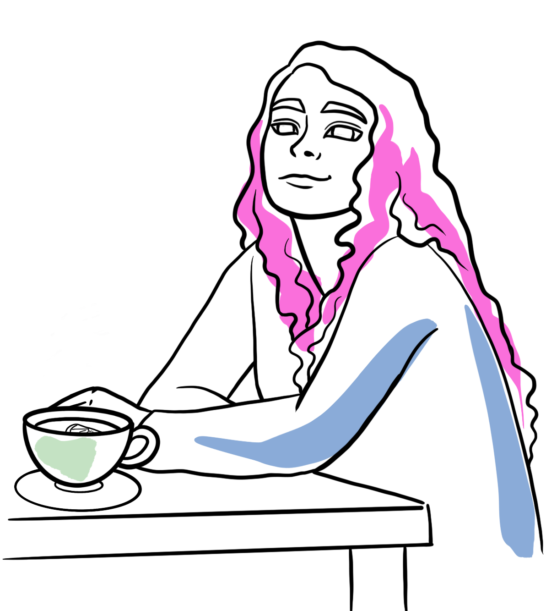

Welcome to my magical world of UX experiments
I specialize in user research, wireframing and prototyping. Also I endlessly enjoy solving user problems because I know I can make this world a slightly better place if I help at least one person (or one company). Always loved puzzles and this is my way of keeping them in my life.
My skills include using Figma and Miro like there’s no tomorrow, smart Googling and being best friend with Bard (ChatGPT’s fun cousin).
I love to see the problem in general before I dig in and make it a challenge. I play well with others but not opposed to work on my own, either way I know it’s gonna be a fun time!